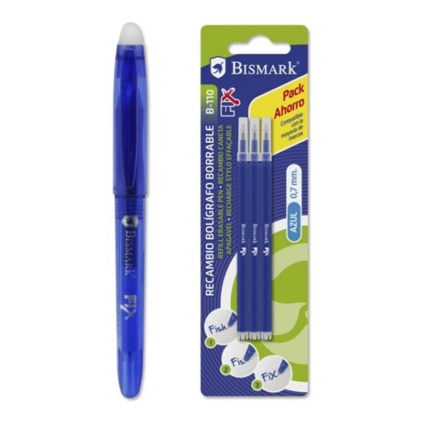

Un stylo effaçable, également connu sous le nom de stylo à encre effaçable, est un type de stylo qui utilise une encre conçue pour être effaçable, contrairement aux stylos traditionnels dont l'encre est permanente. La plupart de ces outils d'écriture fonctionnent de la même manière que les crayons à papier.
| Stylo Effacable de couleur bleu |  | 9$90 |